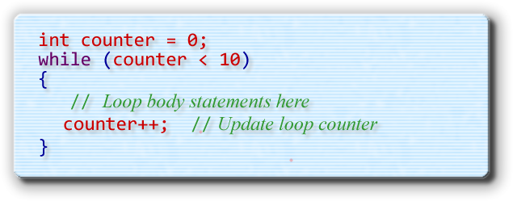
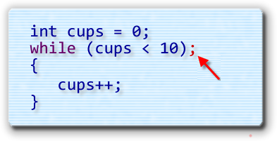
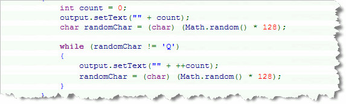
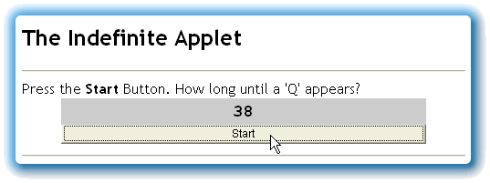
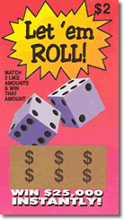
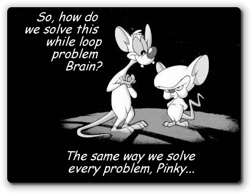
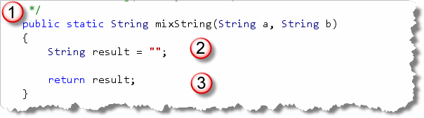
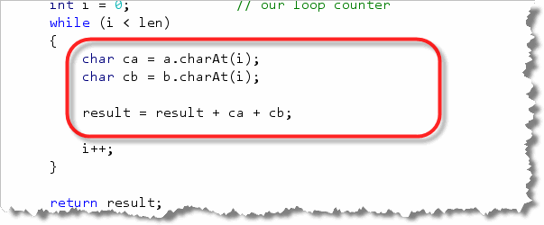

The
The for
loop makes
writing counted loops very easy because it puts the pieces
you need—a place to initialize your counter, a place to test
your counter, and a place to update your counter—all within
easy reach.
You can, however, do exactly the same thing with Java's
simpler, but more general-purpose while loop.
In my mind, though, using a while loop
is just not quite as convenient.
The while Loop Syntax
The while loop, which you can see in the
illustration below, only has three parts:
- the keyword
while - a
booleantest - a loop body

To use the while statement to build
a counted loop, you must do three things:
- Create a counter variable, and initialize it before
the loop starts. This takes the place of the
initialization expression in the
forloop. - Test the counter variable inside the
whilecondition. - Update your counter at the end of the loop body.
This takes the place of the update expression in the
forloop.
Here's the basic skeleton for a counted loop, written
with while:

While Loop Caveats
There are three common errors that often occur when
writing counted loops using while. By learning what
they are, and then checking for each one when you write your
loops, you increase your chances of writing a correct loop the
first time.
Expired Counters
When using the for loop, you usually create
and initialize your counter variables inside the initialization
expression of the for loop. If you forget to do so,
the for loop condition usually looks "empty", which
acts as a reminder.
With the while loop, however, you must define
and initialize your counter outside the
while loop. This has several implications:
- In the
forloop, the scope of the counter variable is restricted to the body of the loop. That is not true for thewhileloop. - If you have several
whileloops, and each of them use the same counter variable name, then you cannot redeclare the variable for each new loop. All of your loops will use the same variable. - You must, however, remember to reinitialize
the counter before each loop, even though you can't
redefine it. Forgetting to do this often leads to
the case of the expired counter. If a counted
whileloop is preceded by another, and both use the same counter variable, you may forget to reinitialize the counter for the second loop. This doesn't create a syntax error, but it does give you the wrong answer.
There are two possible solutions to the expired counter problem.
- If you give all of your counters unique names, you won't run into the problem. Sometimes, however, this is hard to do. Thinking up a new name when you really want to use the common counter names like i, idx, or counter, can be difficult.
- A better solution is to train yourself to always
initialize your counter on the line immediately preceding
the while condition. After a bit, a missing
initialization starts to look as "empty" as the missing
initialization section in a
forloop.
Endless Loops
An endless loop is a loop that doesn't end, because the
loop test condition always evaluates to false. Although
endless loops are sometimes intentionally, most of the time
they are the result of a mistake that you've made when specifying
the loop's exit condition or bounds.
The problem of endless loops is not unique to counted
while loops. You can create endless loops in a
variety of ways. Still, a counted while loop lends
itself to endless loops in a way that the others don't. Because the
while loop places the counter update expression at
the bottom of the loop—which may be far removed from the
while loop condition by the time all of the
intervening statements have been added—it is easy to forget it.
With the for loop, leaving out the update
expression creates an "empty" looking loop condition, but not
with the while loop.
The easiest solution to this problem is to use the loop-building strategy presented in this chapter. If you start by first writing the "mechanics" of the loop—bounds, precondition, and update—you are less likely to get distracted by the "real" statements and forget to add the update expression at the end of the loop.
Phantom Semicolon
This last problem is also not restricted to while
loops; it affects selection statements and for
loops as well.

If you put a semicolon after the condition of a while
(or for) loop, the body of the loop becomes the
null statement. Here's an example.
Because of the semicolon, you are saying:
As long as cups is less than ten, do nothing.
This creates two problems:
- If
cupswas originally less than ten, (as in the illustration here), you will have an endless loop. Because nothing in the null body changes the value ofcups, it will remain at its initial value. - If
cupswere greater-than or equal-to ten, you wouldn't have an endless loop, but the statements that were intended to be executed as part of the loop body would be executed exactly once regardless of the test condition.
Where To Now?
After reading the preceding section, you might be
wondering why anyone would bother with while at all.
The for loop seems so much more capable.
That's true for counted loops; if you are going
to write loops that are controlled by a counter, you should
probably use the for loop. But, not all loops, or
even most loops, are counter-controlled. Event controlled loops
are much more common, and there, the while
loop reigns.
Introducing Indefinite Loops
Often you'll need to
write loops that monitor events, rather than loops
that use a simple counter to control their execution. To
accomplish this, you'll usually use the while loop.
Although the for loop is the undisputed champ
in the counted-loop arena, the while loop really comes
into its own when the loop test condition is a little less clear-cut.
Let's look at an example. Here's a condensed fragment of code from an applet named Indefinite.java that uses a simple "event-testing" loop similar to the one shown here. Take a look at this loop, and see if you can guess how many times it will execute.

In the Indefinite program, the character
variable, randomChar, is assigned a value between 0
and 127, calculated by using the Math.random()
method. In the loop that follows, randomChar
is tested, and, if it is not equal to the character 'Q',
then the loop body is entered, where the number of repetitions
is incremented and displayed.
After you've looked it over,
run the applet by clicking the link in this sentence.
When the applet appears, press its
Start button, and see if you were right! When you press the button, the
Indefinite applet will execute the loop as shown here.

Unless you have some kind of psychic powers, you can't know how many times the loop will run. That's why this kind of loop is called an indefinite loop. You can't tell by reading the source code how many repetitions it will make. Even though this is not a counted loop, the body
of the loop must still contain code that advances the
loop's bound. If it does not, then, once entered, the loop will
repeat forever. In this example, we advance toward the loop's
bound by calculating a new random character for
randomChar.
Sentinel Bounds
 This particular indefinite loop is an example of a sentinel
loop. A sentinel loop is a loop that looks through its input
for some special value to end the loop. The special value is
called the sentinel. Sentinel loops are
commonly used in two situations:
This particular indefinite loop is an example of a sentinel
loop. A sentinel loop is a loop that looks through its input
for some special value to end the loop. The special value is
called the sentinel. Sentinel loops are
commonly used in two situations:
- When searching through text to find a character or word.
- When used with an "out-of-bounds" value that marks the end of input.
In this example, the sentinel is the letter 'Q', generated by the random number generator, and it is used to mark the end of valid input.
Another Sentinel Example
A sentinel doesn't necessarily have to be a single value, like
the letter "Q" in the example just shown; it may include a range of values.
When we wrote GradeCalculator in the last chapter, we had to
know ahead of time how many grades the teacher would enter, so
we could use the for loop.
With the while
loop, though, we can allow for any non-positive number to act as a
sentinel to end the input. To illustrate, let's write
a program that does this:
Calculate a Positive Mean
Accept integer numbers from the user until a negative number is entered.
Display the sum, count and average of the numbers entered.
Rather than just reading ahead, see if you can apply what you learned in the Writing Loops section, to create a loop plan that meets these requirements.
Here are the questions you should ask yourself:
- What is the loop's bounds?
- What are the necessary bounds preconditions?
- What are the necessary actions to advance toward the bounds?
- What is the goal?
- What are the goal preconditions?
- What actions are necessary in the body to carry out the goal?
- What postcondition actions are necessary to carry out the goal?
When you're done, come on back here and we'll tackle it together.
1. What is the loop's bounds?
The loop's bound is that a negative number was entered. The Java loop condition should look like this:
while (num >= 0)
2. What are the bounds preconditions?
The only precondition is that num holds a
value. The value could come from reading a network stream,
could be entered from the keyboard, or could be generated by
a random number generator. The only hard-and-fast requirement
is that num must be initialized in such a way
that it is possible to either enter or to avoid the loop.
Here's some code that meets those requirements.
System.out.print("Enter next number: ");
int num = cin.nextInt();
3. What advances the loop?
Inside the loop body, the value of num
must change. To do that, you
could generate another random number, input a value from the
network stream, or, as we've done here, read another number from the keyboard.
At this point, you should be able to test the mechanics of your loop, and make sure that it "works." Once the loop works, you can turn your attention to the loop's goal.
4. What is the goal?
The loop's goal is simple. It should display the count of the non-negative integers entered, the sum of the integers, and their average.
5. What are the goal preconditions?
To meet the goal, you must have a counter, and a variable that
can hold the sum. The counter should be an int, but
the sum can be an int or a double.
6. What actions advance the goal?
Each positive number should be added to the sum of the numbers. Then, the count should be incremented for each number entered.
7. What postconditions must be considered?
You must first check for a count of zero. If count is zero then no numbers were entered and you can't compute the average or sum.
If count is greater than zero, then compute and display the sum, average, and count of numbers entered.
The Solution in Code
You'll find a solution, PositiveMean.java, in the
code folder for this chapter. This program follows this strategy to
calculate the average of a sequence of numbers input from
the keyboard.
 Open the program in DrJava and you'll notice that:
Open the program in DrJava and you'll notice that:
- The precondition section sets up both the
counter and accumulators, as well as reading in the initial
value from the user. Before you encounter the loop test,
you must make sure that the tested value (
numin this case) has a legitimate value. - Rather than checking a counter or looking for a single
value, the loop bounds is controlled by a more general Boolean
condition. The loop will continue while
numis greater than, or equal to 0. - Inside the loop body, the three loop operations take place: the current count is incremented, the current number is added to the running total, and the next number is generated to advance the loop. Remember, if we didn't read a new number, then we'd be stuck inside an endless loop!
- Finally, after the loop is finished, the count value is checked in the loop's postcondition to make sure it's "safe" to calculate the average. If no positive numbers were entered, an error message is displayed instead.
You should run the program on your own computer. Here are
two different runs on my machine:

The Random Class
Earlier in the semester, you learned to use the Math.random()
function to generate numbers in the range 0.0 to <1.0. Under the
hood, Math.random() uses one of the Java core
classes named java.util.Random.
Using the Random class is not quite
as easy as using the Math.random() method:
- First, you have to import the
java.utilpackage. You don't have to import anything to use theMathclass. - Second, you must create a
Randomobject. The methods of theRandomclass are notstaticlike those of theMathclass.
Despite this extra work, however, creating a Random
object, and using its methods to generate your random numbers,
can often prove beneficial. Let's start by creating a
Random object.
Creating Random Objects
When you construct a Random object you have
your choice of two Random constructors: one that
takes no argument and one that takes a single long
as the random number generator seed.
Random r1 = new Random();
Random r2 = new Random(10L);
If you use the first constructor, the seed (or starting number) used for the random number generator is taken from the current time. If you use the second constructor, the numbers generated will be randomly distributed (in the statistical sense), but the same sequence will always repeat in exactly the same order, every time the program is run.
This is often useful for testing. You run the program using a predefined seed during the test phase, and then switch to a more truly random seed when you ship your product.
Generating Numbers
To generate a random number, you send messages to
your Random object, asking it to manufacture a
new number for you. Here are some of the random numbers you
can ask for:
nextDouble()returns adoublebetween 0.0 and 1.0. This method has exactly the same characteristics as callingMath.random().nextFloat()works likenextDouble()but the result is afloat.nextInt()andnextLong()return anintand along, respectively, that is uniformly distributed over the entire range ofintorlong. That means,nextInt()could return a number anywhere from around two-billion to around minus two-billion.nextInt(int max)returns anintthat is uniformly distributed between 0 (inclusive), and max (exclusive).nextGaussian()returns adoublelikenextDouble(), but rather than being uniformly distributed between 0.0 and 1.0, the number is "the next pseudorandom, Gaussian ("normally") distributed double value with mean 0.0 and standard deviation 1.0 from this random number generator's sequence." This means thatnextGausian()delivers both positive and negative numbers, and that those numbers can be larger than 1.0.
Once you've generated a random number using one of these methods, you may have to manipulate it, as you did earlier, to make sure it falls within the range of acceptable values.
Let 'em Roll

Because the return values are a little different, the manipulations are also. For instance suppose you wanted to simulate an extremely hard-to-win lottery game called Let 'em Roll, where the winner must guess six random numbers between 39 and 173 (inclusive on both ends). This time, let's use the Random class, and the
nextInt() method to generate our numbers. As with
the year picking example, you'll need some variables to store
each of the six picks. Then, use the nextInt()
method to generate a random number of each pick; but before
storing it in the variable, manipulate it like this:
- Because the random number can be positive or negative,
use
Math.abs()to convert it to a positive number. - Once it is a positive number, you restrict it to the values 39 to 173 (inclusive). To do this, first find the range (number of numbers), and then use the modulus (remainder) operator on your value. (173-39+1 is 135 total values.)
- The result of using % 135 will be a positive number from 0-134, so you have to add 39 for your final answer.
Here's what these steps look like in code:
Random r = new Random();
int min = 39;
int max = 173;
int range = max - min + 1;
int p1 =(Math.abs(r.nextInt()) % range) + min;
int p2 =(Math.abs(r.nextInt()) % range) + min;
int p3 =(Math.abs(r.nextInt()) % range) + min;
int p4 =(Math.abs(r.nextInt()) % range) + min;
int p5 =(Math.abs(r.nextInt()) % range) + min;
int p6 =(Math.abs(r.nextInt()) % range) + min;
Of course, since the Random class already has
a nextInt(int range) method, each line in
this code can actually be reduced to:
int p1 = r.nextInt(range) + min;
The ACM RandomGenerator Class
ACM programs can make use of an "enhanced" version of the
Random class, named RandomGenerator. To
use this class, you create a RandomGenerator variable
using the getInstance() method like this:
import acm.util.*; // import needed
RandomGenerator gen = RandomGenerator.getInstance();
The copy of the generator will be shared among all the ACM classes
running at any given time. You can use all of the Random
methods, in addition to these handy additions:
nextBoolean(double p)returns abooleanvalue with the specified probability. That is,gen.nextBoolean(.5)would returntrue50% of the time.nextColor()returns a randomly selected opaquejava.awt.Colorobject.nextDouble(double low, double high)returns adoublebetweenlow(inclusive) andhigh(exclusive).nextInt(int low, int high)returns anintthat is uniformly distributed betweenlow(inclusive), andhigh(exclusive).
Remember, though, the RandomGenerator class only
works in ACM programs.
Try It Yourself
Here's an exercise you should complete using DrJava's Interactions Pane.
- Create a
Randomnumber generator. Remember that you have toimportthejava.utilpackage. - Write a
whileloop that generates random integers (both positive and negative). (Use Shift+Enter in the Interactions Pane to avoid running immediately.) - Count the number of each (number of positives and number of negatives).
- Sum both positive and negative numbers using a single accumulator.
- Stop the loop when the count of negative numbers exceeds 100.
Print the value in the accumulator, (sum), as well as the
number of positive and negative numbers generated. Remember
that you will need extra variables before the loop. You'll
need two counters as well as an accumulator. Use type
double for the accumulator (sum), so that you
don't overflow by too many additions or subtractions.
Hands-On While Loop Problems
To get some practice using the while loop, open the
WhileLoopProblems program in this chapter's code folder,
and then locate the mixString() problem at the top of the
file:
 As you can see, the
As you can see, the mixString() method has two
input Strings, a and b,
and your method is going to produce a new String
with the characters from a and b
interleaved. If one input String is
larger than the other, then the extra characters will appear
at the end of the output String.
While you could solve this using the for
loop, the purpose of the exercises is to learn how to use the
while loop. Because of that, the test program actually
has to read your source code to see if you are using while
instead of for. That means you can't have any
for loops inside
your method, even if they are commented out.
Solving the Problem
So, where do we start, now that we're working with while
loops instead of for loops?

We Start With the Method Skeleton!

Once you have the header, the results and the return
expression, you can run your tests.
 HMMM. That's kind of annoying. It looks like we really do
need to use the
HMMM. That's kind of annoying. It looks like we really do
need to use the while loop, or the test program
won't even check the program.
The while Loop Skeleton
No worries though. Just like we had a standard loop skeleton for
a for loop, we can do the same thing for while.
(You'll find this skeleton earlier in the lesson.) Applying that to
the mixString problem gives us this:
 In this case I:
In this case I:
- Create a "dummy" variable for ending the loop.
- Create a counter before the loop starts.
- Compare the counter to the loop bounds in the
whileconditional expression. - Update my counter at the end of each loop repetition.
A textbook example. Now let's think about our loop plan and see how we actually solve the problem.
What is the Loop's Bounds?
In this problem, we want to interleave the characters from
two Strings, but each may have a different length.
That means that our loop will have to stop when the
shorter String has been processed.
We can use that information to set our bounds variable
len to the length of the shorter String,
like this:
 Now, the loop will stop at the right place.
Now, the loop will stop at the right place.
We've already taken care of the bounds precondition and advancing the loop by using our ready-made while-loop skeleton. So let's move on to the goal.
The Loop Operations
Our generic function skeleton took care of Step 4 in our standard loop-development plan (creating variables to hold the loop's output.) Let's move on to Step 5: the loop operations.
What we want to do in each repetition, is place one character
from a in the output, followed by the character
at the same index position from b. We can do that
easily by using this code:

At this point, our method should pass all of the tests where the inputStrings are both the same length.
Unfortunately, the fellow who wrote the tests was especially
devious, and so only 3 of the 13 tests actually have equal-length
parameters. Bummer.
The Loop Post-Conditions
That means, to solve this problem, we'll have to think of the post-conditions to the loop. Remember, a loop ends because its bounds are reached, not because its goal has been accomplished.
How can we tell if our loop has accomplished all we desired?
By using the if statement to check if conditions
are as we expect. In this case, if the variable len
is less than the length of either input String,
then we still have some characters left over. We need to
"paste" them onto the end of the output like this:
 Notice that because we're using a counted
Notice that because we're using a counted while loop
instead of a for loop, that the counter
i is still available after the loop ends. That
means we can use i to extract the rest of either
a or b if necessary.

The while Loop Summary
- The syntax of the
whileloop consists of the keywordwhile, followed by a Boolean condition in parentheses, followed by the statement to execute. If you wish to execute mutliple statements, follow the condition with a block. - The general purpose
whileloop repeats the statements in its body, as long as its Boolean condition istrue. - To write counted loops with
whileyou must create a counter variable before the loop is encountered, test the counter in the loop condition, and update the counter at the end of the loop body. - The pitfall of an expired counter occurs when you fail to initialize your counter to its starting position immediately before your loop begins.
- An endless loop occurs when you fail to update your loop counter at the bottom of the loop body.
- A phantom semicolon, placed after the loop condition,
can lead to either an endless loop or a body that is
executed exactly once, regardless of the condition. In
all cases, placing a semicolon after the
whileloop condition is a logical error. - An indefinite loop monitors some condition other than the state of a counter as its loop bounds.
- A sentinel loop examines each value in input looking for a value which indicates the end of the loop. The sentinel may be a single value or a range of values.
- The
java.util.Randomclass creates a random number generator than can be used to produce random numbers using several different schemes. - To use the
Randomclass you first create aRandomobject and then call its methods to produce the next in a sequence of randomly distributed values. - If you create a
Randomnumber with no parameter, then the system clock is used to seed the generator. You may, though, choose to pass a specific seed value. - The sequence produced depends on the initial value of the
Randomobject, called the seed. Although the sequences will always be distributed randomly, the specific sequence that is chosen depends on the seed. If the same seed is used, the same sequence will always be produces. For that reason, these are known as pseudorandom numbers.